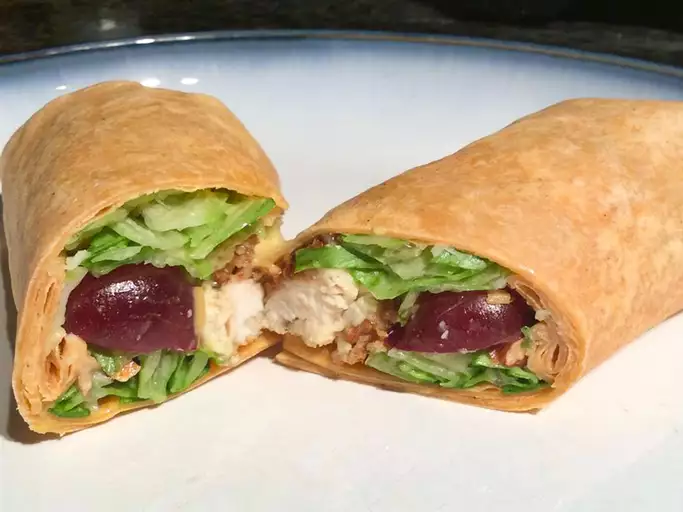

Honey Mustard Crispy Chicken Wrap

Description
Use crushed, crisp rice cereal squares instead of panko crumbs with gluten-free wraps for a gluten-free version!
Ingredients
- 1 pound boneless skinless chicken breasts
- 1 egg
- 1 cup panko crumbs
- ½ teaspoon Spice Islands® Fine Grind Sea Salt
Steps
- Pound chicken breasts, one at a time in a resealable freezer bag, until about 1/2-inch thick. Lightly beat egg in a shallow bowl. Combine panko crumbs, salt, pepper, garlic powder and onion powder in a separate shallow bowl. Dip chicken breasts in egg until coated, drip off excess, and dip in panko mixture. Press chicken into crumbs until fully coated. Heat oil in a large skillet on medium high heat. Transfer chicken to pan and cook about 2 to 3 minutes per side or until chicken is brown, crispy and fully cooked. Transfer to a plate and cut into strips.
- Honey Mustard: Combine mayonnaise, yellow mustard, Dijon mustard, honey and lemon juice in a small bowl. Combine desired amount of chicken, honey mustard, bacon, lettuce, grapes, shredded cheddar cheese, green onions and sliced almonds in tortillas. Wrap up and serve.